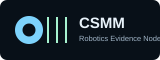

Lab Identity
Coventry University CSMM is contributing a campus evidence node focused on remote robot operation, latency analysis, and reusable sim2real evidence.

CoventryCSMM Robotics Evidence Node for remote teleoperation, trustworthy robotics evidence, and SONAIR collaboration.
Coventry University CSMM is contributing a campus evidence node focused on remote robot operation, latency analysis, and reusable sim2real evidence.
The portal analyses the UCL-Nottingham UR5e teleoperation dataset, including RTT samples, command latency records, and session audit events.
Email: yeh19@uni.coventry.ac.uk
Node ID: csmmEvidence from a UCL-Nottingham UR5e teleoperation session, showing how timing variation can affect remote robot reliability.
Median RTT
Typical round-trip network response.
RTT P95
Tail latency for reliability checks.
Median Command Delay
Typical command acknowledgement delay.
Tail Timing Gap
RTT and command P95 overhead above median.
Round-trip time across the session, with audit events overlaid where available.
Distribution of relay round-trip delay for robot commands.
Tail Timing Gap combines RTT tail overhead and command-delay tail overhead. It highlights the extra delay a physical robot may experience beyond typical simulated control timing.
Loading interpretation from the dataset...
This node publishes non-sensitive timing and reliability evidence. It does not publish private operator identity, credentials, or infrastructure secrets.
The organiser server can embed this portal and retrieve the current CSMM assessment result from the dashboard metrics.